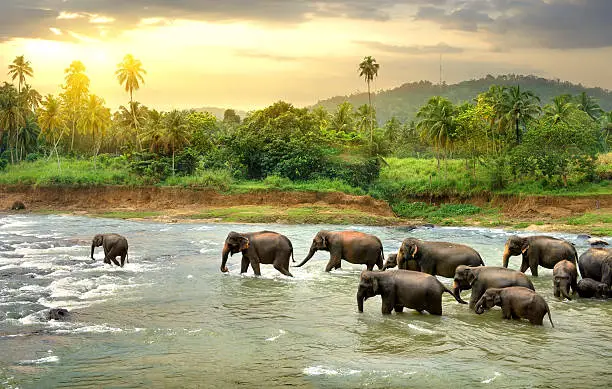
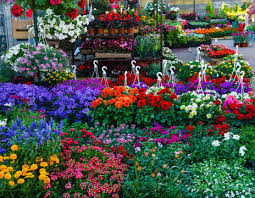

Mountains

Mountains are majestic and mysterious, reminding us of nature’s strength.
Forests

Forests breathe life into our planet, offering shelter to countless species.
Flowers

A flower is the part of a plant that produces seeds. It is usually colorful and smells nice to attract insects or animals for pollination. Flowers help plants reproduce and come in many different shapes and sizes.